InstaBowl
My Role: Creative Technologist
Project Timeline: 1 Week
Context: Rapid Prototyping
Materials: laser cutter, solder, copy & paste, testing
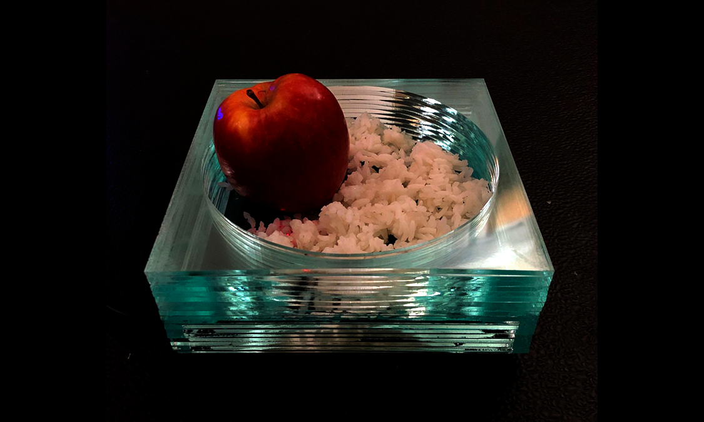
The InstaBowl was created in Responsive Mobile Environments in the spring of 2019. InstaBowl is almost a normal bowl that can capture photos of your face when you eat what's in it. The embedded IR sensor triggers the camera to automatically take a photo or photo series. This enables a "food" eats (you) first mentality instead of our "phones eating first". We are obsessed with capturing our surroundings and especially our indulgences. For what reasons? I aim to subvert foodie culture and the desire to post pictures of our food on social media. This media capture could serve as a space for fun reflection or maybe even mindful eating. Do we capture our food to truly remember it or to show others? When is eating considered a highlight? What memories of consumption should we store? How do we start to understand that there's another layer of passive capturing happening without our intentional direction?
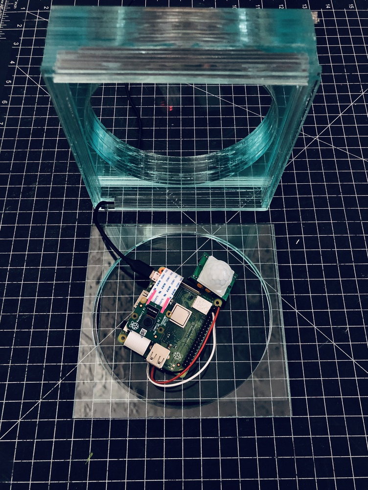 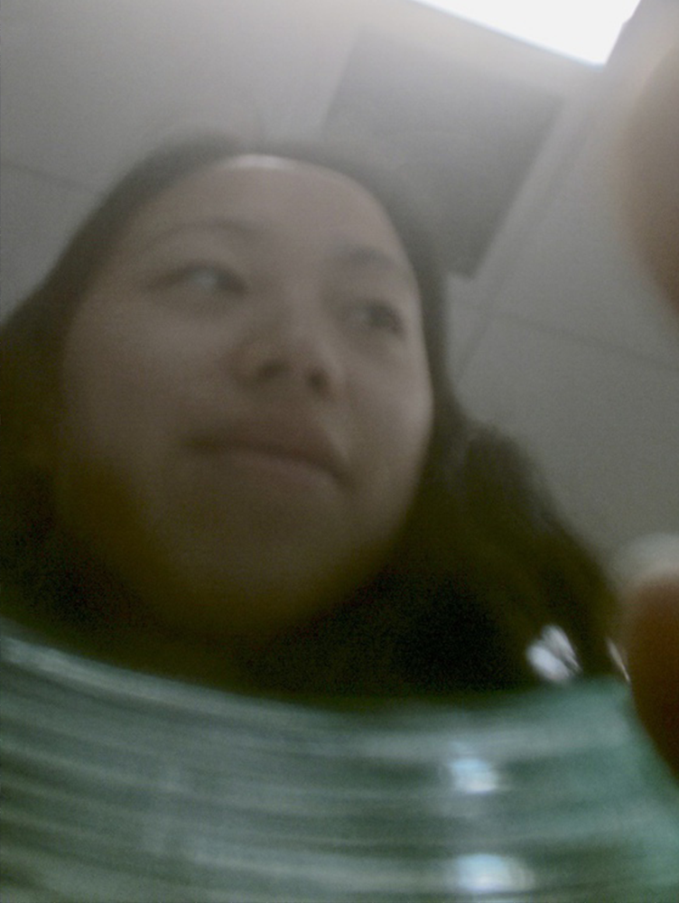
Here's some more details on how I made it!
I first had to get the camera working and then I got the IR sensor to detect movement and to trigger the camera, lastly I used the Dropbox Uploader code by Andrea Fabrizi to upload the photos from the Raspberry Pi to Dropbox where the photos could then be accessed and shared at will. I thought about making an instagram bot to allow this project to have its own life but wasn't able to access instagram's developer tools in the way I thought I would. Overall, this was an extremely fun project to work on and see come to life.
 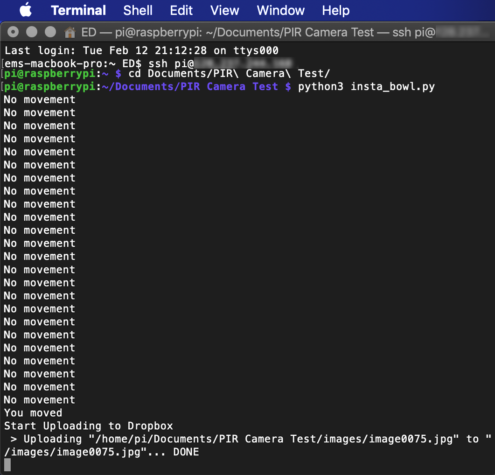
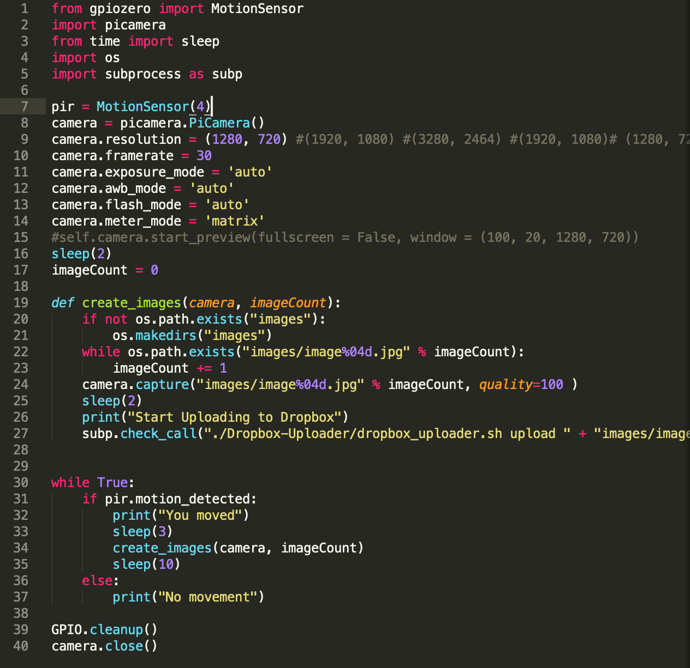
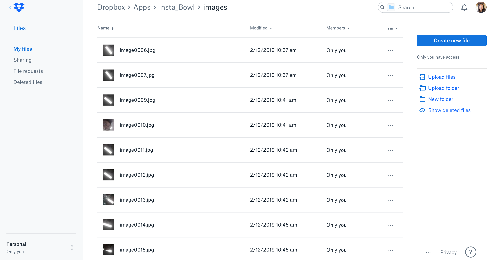
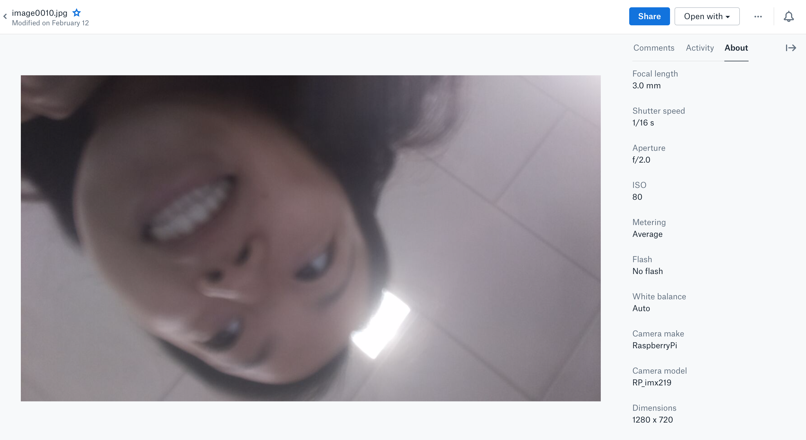
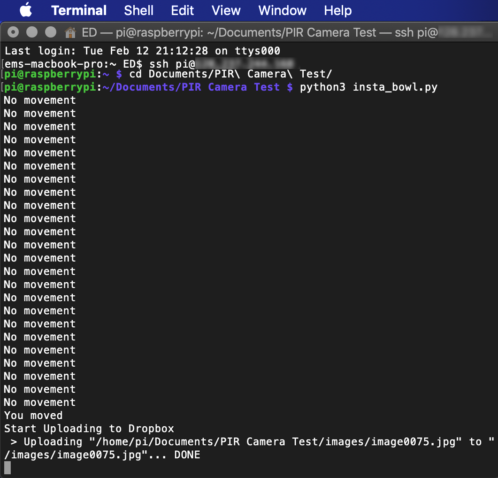
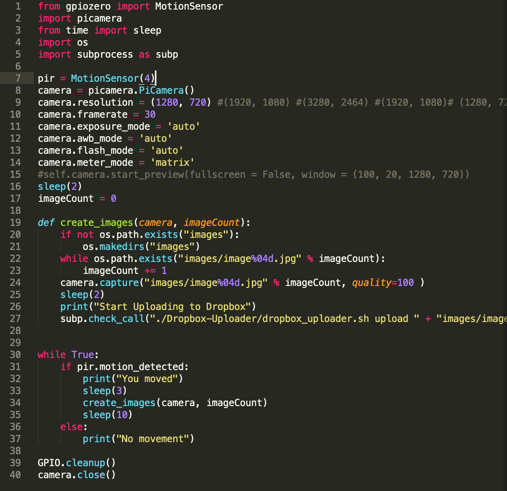
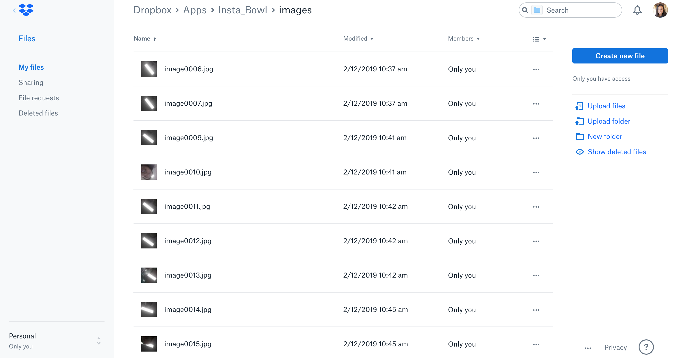
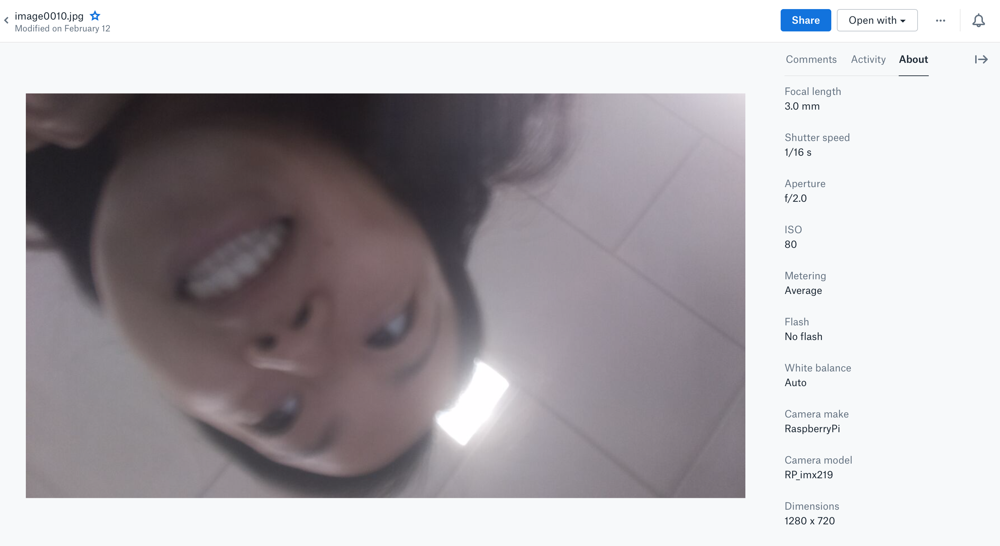
Intent and Inspiration
I was initially interested in sleep and how we can interface and explore creatively at the boundary between wakefulness and rest. The daily habit of sleeping (or not sleeping) led me to think about some of the other things we do every single day (perhaps the mundane) and how they can become augmented for various reasons and purposes. I hope that investigating these types of activities, can create magical and extraordinary experiences. Through my case study on augmented food experiences, I was lead towards thinking about how our food culture has changed as a result of increasingly ubiquitous smartphones with cameras. Another case study was on Elisa Giaccardi's thing centered design work which is a new way to explore how "human centered" everything in design claims to be. This space of capturing (either photo, video, audio) or even screen capping text or images is an interesting space for reflection on the quantified self. My goal with the "insta bowl" was to create the inverse of what we normally see when we think of pictures and food. Instead of a beautiful meal or a posed cheers, glass clink, boomerang, it's about the bowl providing you with a new way of seeing yourself during a time of temporary and repeated engagement. There are other approaches out there of equipping or embedding objects with cameras and sensors so I wanted to execute on my own take of this to see how it would turn out.